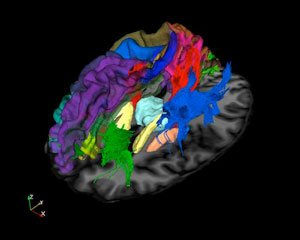

MRI
3T and 7T human MRI
Two 3T scanners and a 7T whole-body system.
Functional and diffusion MRI
fMRI, including signals in white matter, and diffusion imaging of tissue microstructure.
MR spectroscopy
In vivo measurement of tissue chemistry and metabolism.
Preclinical MRI
Small-animal MRI from 4.7T to 15T.